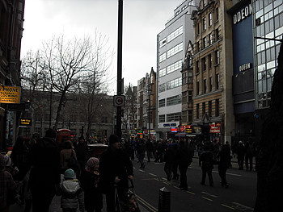
1월29일 Chinese new year행사 구경다녀왔다
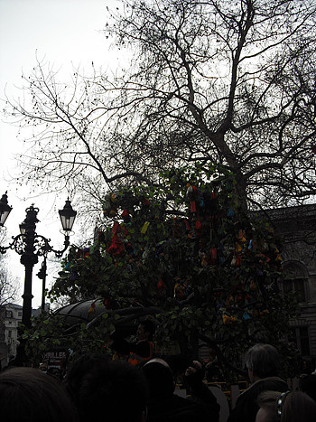
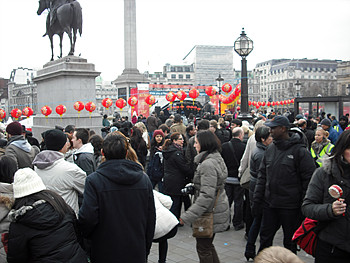
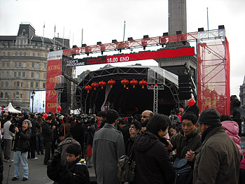
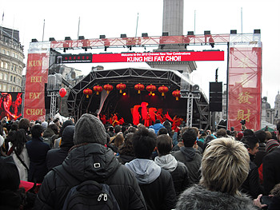
런던한복판에서 이만한 규모로 행사를하는
중국의 빠와....;;;;
전통무용과 퍼포먼스등등 구경
너무 추워서 한 3팀까지만 보고 장소이동
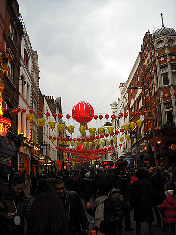
소호쪽에는 역시나 사람이 드글드글
골목한번 잘못들어갔다가 갇혀서
오도가도 못하는 상황발생 ㅡㅡ;;;;
빠져나오느라 늠 힘들었음;;;;;;
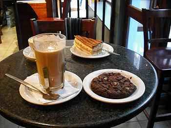
커피숍에서 에너지충전중
+
홀본에 있는 김치레스토랑이 1월말까지 50%행사를
한다길래 저녁을 먹으러가기로 결정했는데...
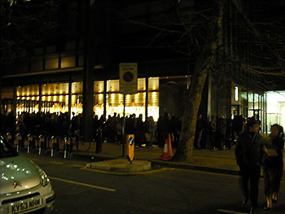
오후 6시쯤 가보니 이런상황이 ㅡㅡ;;;;;;
저게다 기다리는 사람들;;;;;
하긴 여기 주말저녁시간대는 항상 20~30분 기다려야 되는곳이긴 했지만
어우 줄이 저게 뭐야;;;;
바로 깔끔하게 포기하고 근처 일식집으로 이동^^;;;;
다음 새로운 외국어를 배운다면 뭘 배우고싶냐~라는 질문에
항상 일순위가 중국어인데 지금 당장 급하지 않으니
맨날 생각만으로 남겨놓는중^^;;;;
+
먼~옛날 상해놀러갔을때
그때 그 상해의 Human scale을 싸그리무시한
새건물의 연속은 정말 강렬했음^^;;
그럼에도 불구하고 나중에 나이먹어서 한 일년정도는
이 도시에 살아보고싶다는 생각도했었더랬다;
이래저래 중국의 빠와를 실감한 하루였다^^;;
+
어제(토요일) 눈왔당!!!
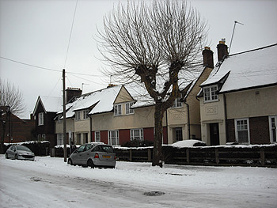
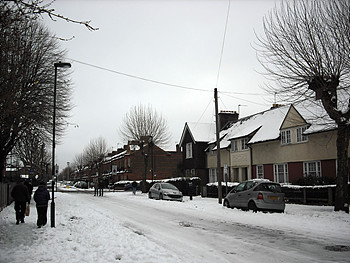
일주일 내리 넘 춥더니
토요일날 오후6시쯤부터 내리기 시작
제법 많이 쌓였다
에너지넘치는 하우스메이트는 오밤중에 거대눈사람을 만들어
현관문옆에 세워놨는데
아침에 나가보니 누가 부셔놨다고 슬퍼하는중^^;;;
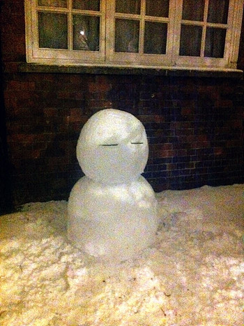
얼굴표정이 넘 귀엽다 ㅋㅋㅋㅋ